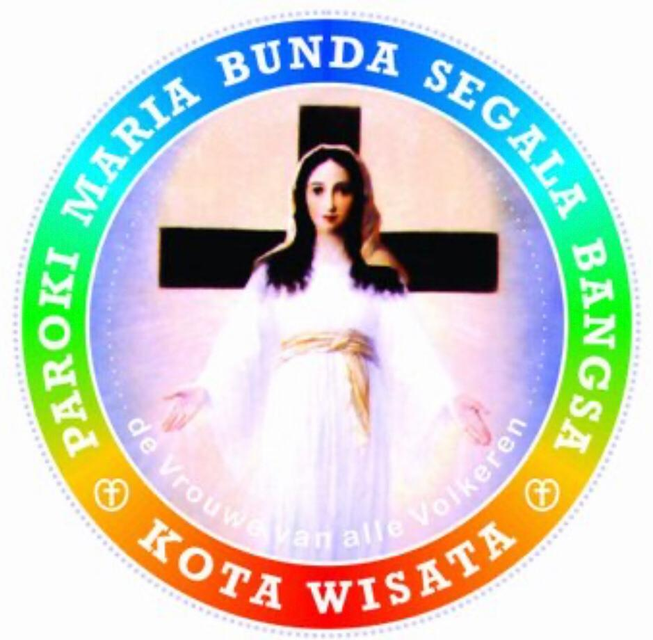
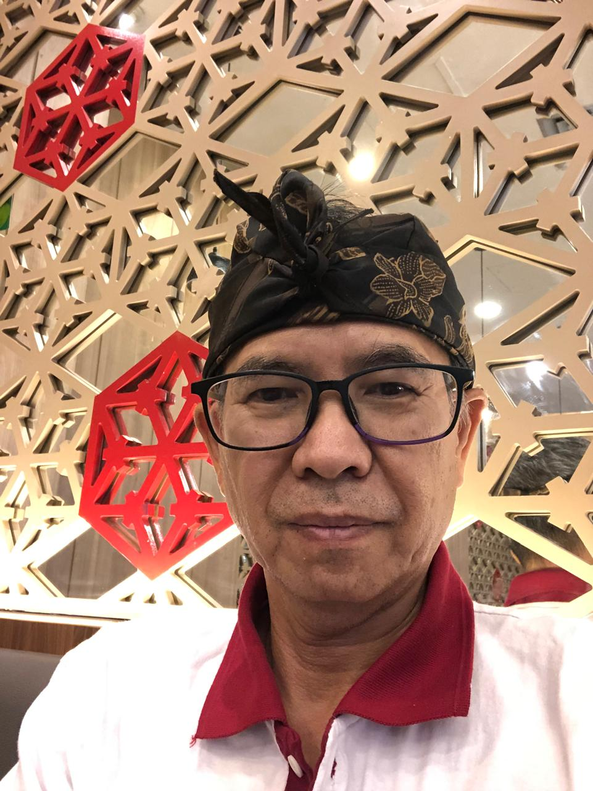
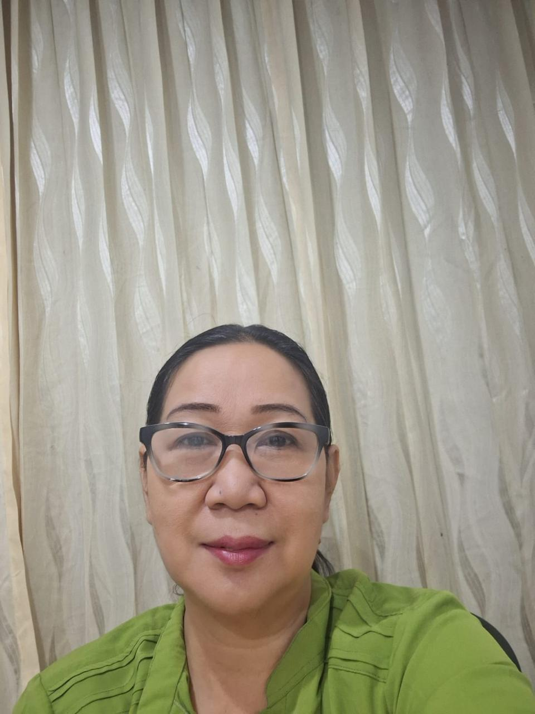
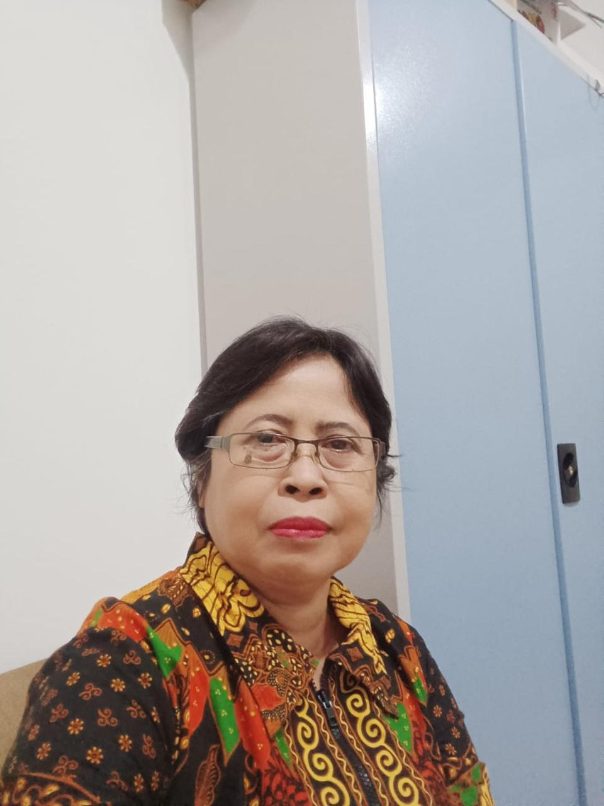
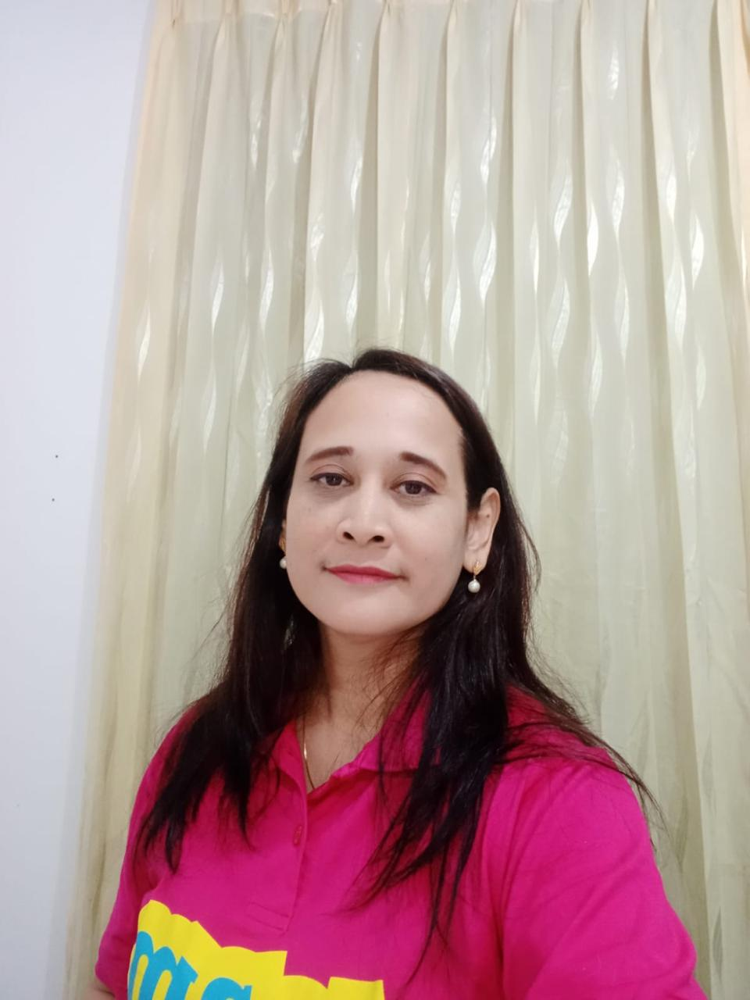

Pelayanan pastoral yang hadir dengan empati, memberikan ruang bagi umat untuk berbagi, memahami pergumulan, dan menemukan kekuatan serta kejernihan dalam perjalanan hidup.
Mengenal PCCPastoral Counseling Center (PCC) merupakan pelayanan konseling pastoral di bawah naungan Paroki Maria Bunda Segala Bangsa, Kota Wisata, Cibubur.
PCC MBSB mulai menjalankan pelayanan pada tanggal 7 Oktober 2016.
Melalui pelayanan ini, PCC hadir untuk belajar memahami, mendengarkan, membantu, dan memberikan pendampingan bagi umat yang membutuhkan.
Menciptakan keluarga Katolik yang rukun, damai dan beriman, sehingga mereka mampu menghayati panggilan Kristus untuk mendirikan Gereja Basis di dalam keluarga.
Belajar untuk mengerti, mendengar, membantu dan memberikan bahu untuk bersandar bagi mereka yang bermasalah.
Membawa harapan bagi mereka yang putus asa, kegembiraan bagi mereka yang berduka, kedamaian dalam perselisihan, pengertian dalam kesalahpahaman dan cinta dalam kebencian.
Pelayanan konseling pastoral PCC MBSB terbuka bagi umat yang membutuhkan pendampingan dalam berbagai tahap kehidupan.
Pendampingan dalam kehidupan perkawinan.
Pendampingan bagi kaum muda.
Pendampingan dalam menjalani kehidupan keluarga.
Pendampingan bagi umat lanjut usia.
Pendampingan dalam kehidupan keluarga.
Pendampingan bagi umat berkebutuhan khusus.
Pelayanan PCC MBSB didukung oleh tim konselor yang menjalankan pendampingan pastoral bagi umat.

Hendry
Elisa
Haryono

Florentina
Marselina

Hetty

Dian
Frans
Hari: Setiap Hari Minggu
Waktu: 09.00 - 12.00
Tempat: Ruang Konseling MBSB
Berbagai kegiatan PCC MBSB dalam pengembangan pelayanan, pertemuan konselor, sosialisasi, dan kegiatan bersama umat.
Galeri foto kegiatan akan ditambahkan secara bertahap.
Kerahasiaan merupakan komitmen utama dalam pelayanan konseling PCC MBSB. Apa yang dibicarakan dan dibahas dalam proses konseling bersifat rahasia.
Paroki Maria Bunda Segala Bangsa
Kota Wisata, Cibubur
Hendry : 0816 777 152
Haryono : 0813 8591 7977
Elisa : 0812 8690 3507
Florentina : 0812 8075 2606
Dian : 0858 8075 4545